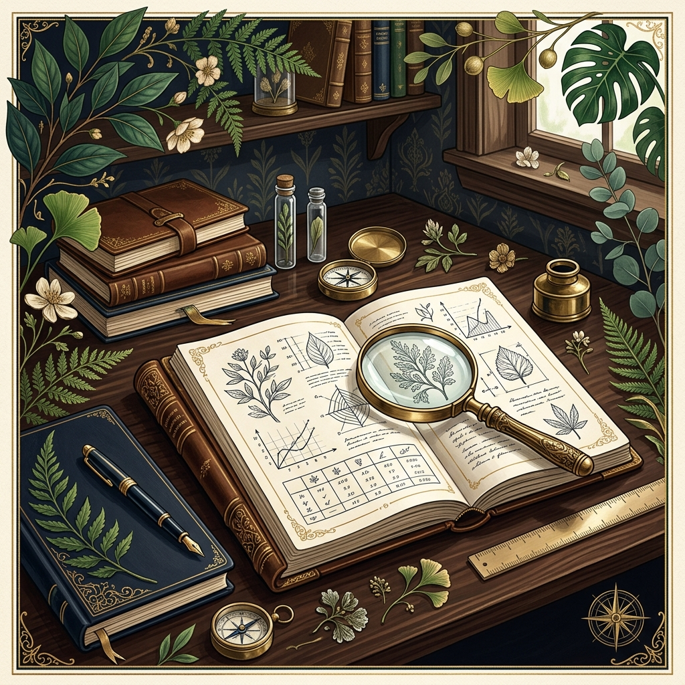
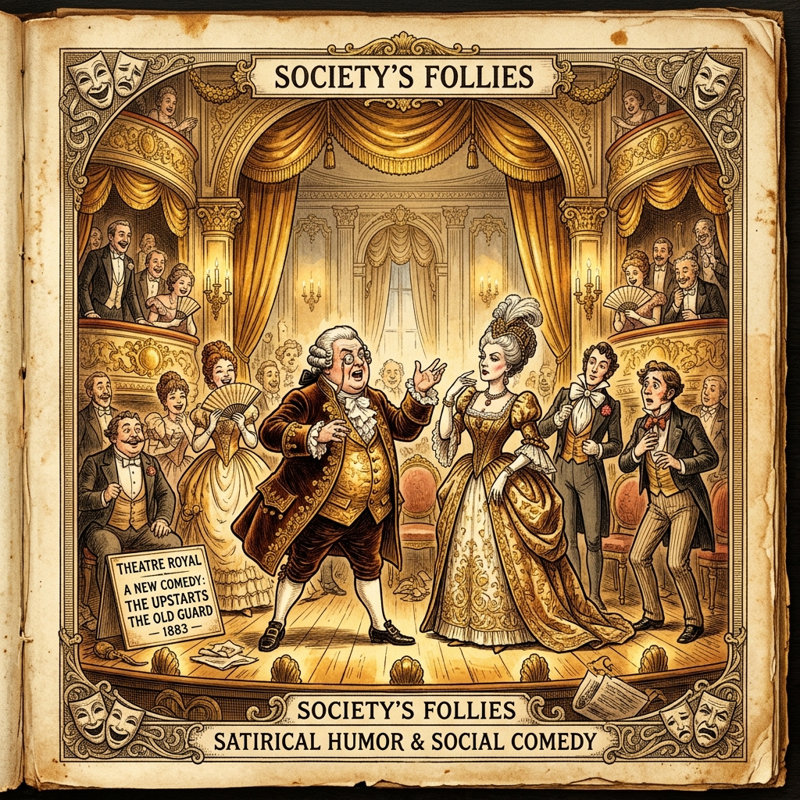
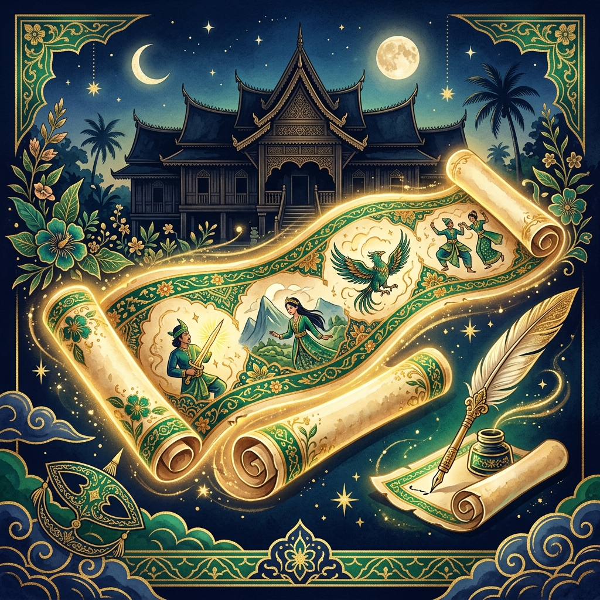
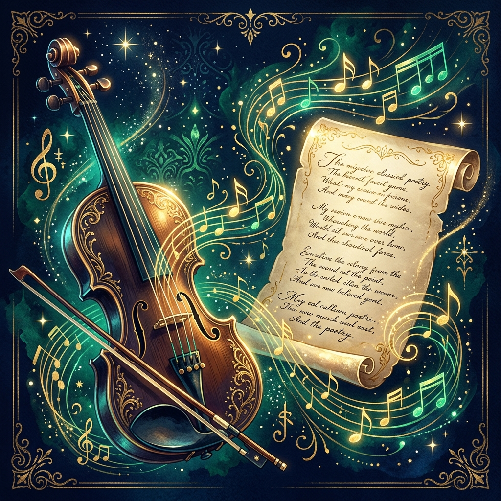

Bahasa Indonesia
Tekan tombol judul materi di bawah ini untuk membaca artikel lengkap (4 paragraf, 5 kalimat per paragraf).

Teks Laporan Hasil Observasi atau disingkat LHO adalah karya tulis yang menyajikan informasi berdasarkan hasil pengamatan langsung. Pengamatan dilakukan secara objektif dan sistematis terhadap objek alam, fenomena sosial, atau lingkungan sekitar pengamat. Tujuan utama penulisan teks ini adalah untuk memberikan fakta ilmiah yang akurat tanpa dipengaruhi pendapat pribadi. Informasi yang disampaikan dalam teks LHO bersifat umum dan memuat klasifikasi mengenai objek yang diteliti tersebut. Melalui penulisan LHO siswa dilatih untuk berpikir kritis serta cermat dalam merekam detail fakta di lapangan.
Struktur pembangun teks Laporan Hasil Observasi secara umum terdiri atas tiga bagian utama yang saling berkaitan. Bagian pertama adalah pernyataan umum yang berisi definisi pembuka serta klasifikasi awal mengenai objek pengamatan. Bagian kedua dinamakan deskripsi bagian yang menjelaskan rincian detail mengenai karakteristik dan sifat fisik objek. Bagian ketiga adalah deskripsi manfaat yang menguraikan kegunaan serta nilai penting objek tersebut bagi kehidupan manusia. Ketiga bagian struktur ini harus disusun secara runtut agar informasi dapat dipahami oleh pembaca dengan mudah.
Ciri kebahasaaan dalam teks LHO ditandai dengan penggunaan kata kerja material dan kata sifat ilmiah yang jelas. Kalimat definisi yang ditandai kata merupakan atau adalah sering digunakan pada paragraf awal pengenalan objek pengamatan. Penggunaan kata benda serta kelompok kata nomina dominan ditemukan untuk menjelaskan aspek klasifikasi objek secara terperinci. Penulis juga menggunakan konjungsi penambahan serta kalimat imperatif untuk memperjelas hasil analisa fakta pengamatan di lapangan. Bahasa yang digunakan harus bersifat baku lugas dan bebas dari kalimat ambigu agar keabsahan data tetap terjaga.
Penyusunan teks Laporan Hasil Observasi diawali dengan menentukan objek penelitian serta merumuskan tujuan pengamatan secara jelas. Pengamat kemudian mencatat seluruh data lapangan melalui instrumen lembar observasi maupun dokumentasi foto secara berkala. Data kasar yang diperoleh selanjutnya diolah dan disusun kembali mengikuti kaidah struktur penulisan LHO yang baku. Hasil akhir karangan LHO dapat dipublikasikan sebagai jurnal ilmiah sekolah atau laporan kegiatan belajar siswa. Kesimpulannya teks LHO merupakan instrumen penting untuk melatih budaya literasi dan kebiasaan berpikir berbasis fakta empiris.

Teks anekdot merupakan cerita singkat yang menarik lucu dan berisi sindiran halus terhadap fenomena yang terjadi di masyarakat. Cerita dalam anekdot biasanya diangkat dari kejadian nyata yang melibatkan tokoh publik atau kehidupan sehari-hari warga. Meskipun mengemas cerita dengan unsur humor tujuan utama anekdot bukanlah sekadar menghibur pembaca atau pendengar. Fungsi utama teks anekdot adalah menyampaikan kritik sosial politik atau layanan publik secara terbuka namun tetap beretika. Kehadiran teks anekdot menjadi media penyampaian aspirasi kritik masyarakat yang efektif melalui pendekatan karya sastra jenaka.
Struktur penulisan teks anekdot dibangun oleh lima unsur utama yaitu abstraksi orientasi krisis reaksi dan koda. Abstraksi berfungsi sebagai gambaran awal tentang latar belakang cerita yang akan disajikan kepada para pembaca. Orientasi menjelaskan suasana dan latar belakang terjadinya peristiwa awal yang memicu munculnya konflik utama cerita. Krisis merupakan bagian inti dari anekdot tempat terjadinya puncak kejanggalan atau masalah lucu yang sangat mengesan. Reaksi dan koda berisi langkah penyelesaian masalah serta kesimpulan penutup yang menegaskan pesan kritik cerita tersebut.
Kaidah kebahasaan teks anekdot ditandai dengan penggunaan kalimat yang menyatakan peristiwa masa lalu atau latar waktu. Penggunaan konjungsi kronologis atau urutan waktu seperti lalu kemudian dan setelah itu sangat mendominasi cerita. Kalimat seru kata kerja aksi serta kata kiasan sering disisipkan untuk memperkuat kesan humor dan sindiran halus. Penulis anekdot juga kerap memanfaatkan pertanyaan retoris yang tidak memerlukan jawaban langsung untuk menyentil kesadaran pembaca. Pilihan kata yang cerdas dan kaya humor membuat sindiran dalam teks anekdot terasa tajam namun tetap menyenangkan.
Proses kreatif penulisan teks anekdot diawali dengan mengamati isu-isu sosial yang sedang hangat diperbincangkan publik. Penulis kemudian mengolah isu tersebut menjadi jalan cerita rekaan yang dibumbui kejutan konflik serta komedi jenaka. Penyampaian kritik melalui teks anekdot dinilai lebih santun dan mudah diterima oleh pihak yang dikritik masyarakat. Di lingkungan sekolah pembelajaran anekdot sangat berguna untuk mengasah kreativitas menulis dan kepekaan sosial siswa. Kesimpulannya teks anekdot adalah media ekspresi sastra yang memadukan humor cerdas dengan pesan kritik sosial yang bernilai.

Teks hikayat merupakan karya sastra Melayu klasik berbentuk prosa yang mengisahkan kehebatan serta kesaktian para raja. Kesusastraan kuno ini berkembang pada zaman Melayu klasik dengan membawa unsur kemustahilan serta keajaiban yang kental. Tokoh-tokoh dalam hikayat umumnya digambarkan memiliki kekuatan gaib yang tidak dimiliki oleh manusia pada umumnya. Selain fungsi hiburan hikayat pada zaman dahulu dibacakan untuk membangkitkan semangat juang para prajurit kerajaan. Penulisan hikayat bersifat anonim karena nama pengarang aslinya tidak pernah dicantumkan dalam naskah manuskrip Kuno tersebut.
Karakteristik utama yang membedakan hikayat dari jenis teks sastra lainnya terletak pada latar istana atau istanacentris. Jalan cerita selalu berpusat pada kehidupan keluarga kerajaan lengkap dengan intrik perebutan kekuasaan dan peperangan sengit. Unsur kesaktian dan peristiwa di luar nalar manusia menjadi bumbu utama yang menghidupkan alur cerita hikayat. Karakter tokoh dalam hikayat dibuat sangat jelas pembagiannya antara sosok protagonis yang baik dan antagonis yang jahat. Penyampaian cerita dilakukan secara lisan turun-temurun dari satu generasi ke generasi berikutnya di lingkungan istana.
Ciri kebahasaan teks hikayat sangat khas karena banyak menggunakan kata-kata arkais atau kata Melayu Kuno yang lampau. Kata-kata seperti syahdan hatta alkhisah dan sebermula sering ditemui pada awal kalimat penanda pergantian peristiwa. Struktur kalimat dalam hikayat cenderung menggunakan pola inverted atau kalimat terbalik yang memperkuat nuansa klasik sastra. Penggunaan majas hiperbola dan perumpamaan kuno sering dipakai untuk menggambarkan ketampanan atau kesaktian para tokoh cerita. Bahasa Melayu klasik ini memberikan nilai estetika tinggi sekaligus menjadi warisan kebudayaan bahasa Nusantara yang bernilai.
Nilai-nilai kehidupan yang terkandung dalam teks hikayat sangat beragam mulai dari nilai moral agama hingga budaya. Pesan moral tentang kesetiaan kepahlawanan dan kepatuhan kepada Sang Pencipta selalu menjadi pesan inti hikayat. Mempelajari teks hikayat memberikan wawasan sejarah mengenai pandangan hidup dan kebudayaan nenek moyang bangsa Indonesia. Generasi muda dapat memetik pelajaran berharga dari keteladanan watak positif yang ditunjukkan oleh tokoh-tokoh utama. Kesimpulannya teks hikayat adalah warisan sastra klasik bernilai tinggi yang perlu terus dilestarikan oleh seluruh masyarakat.
Teks negosiasi merupakan bentuk interaksi sosial yang bertujuan untuk mencapai kesepakatan bersama di antara pihak-pihak berkepentingan. Setiap pihak dalam negosiasi memiliki perbedaan pendapat atau perbedaan kepentingan yang harus diselaraskan secara jalan damai. Proses komunikasi ini terjadi pada berbagai ranah kehidupan mulai dari perdagangan bisnis hingga penyelesaian konflik publik. Keberhasilan negosiasi ditandai dengan tercapainya solusi saling menguntungkan atau dikenal dengan istilah win-win solution. Pembelajaran teks negosiasi sangat penting untuk melatih komunikasi interpersonal dan kemampuan diplomasi para siswa sekolah.
Struktur pembangun teks negosiasi terdiri dari pengajuan penawaran persetujuan dan diakhiri dengan kesepakatan penutup bersama. Bagian orientasi diawali dengan salam pembuka serta pengenalan maksud pembicaraan awal antarpihak yang melakukan proses diskusi. Pengajuan merupakan tahap di mana salah satu pihak menyampaikan usulan atau permintaan barang dan jasa yang diinginkan. Penawaran adalah proses inti di mana kedua pihak saling menyampaikan tawar-menawar kompromi hingga menemukan titik temu. Persetujuan dan kesepakatan menjadi akhir negosiasi yang mengikat kedua pihak untuk menjalankan keputusan yang disetujui bersama.
Ciri kebahasaan dalam teks negosiasi didominasi oleh penggunaan kalimat persuasif yang bertujuan untuk membujuk pihak lawan. Bahasa yang digunakan harus bersifat santun komunikatif serta tidak menyinggung perasaan mitra bicara dalam berdiskusi. Penggunaan kalimat deklaratif dan interogatif sering dipakai untuk menggali informasi serta menyampaikan argumen dengan rasional. Pilihan kata berpasangan tutur seperti mengusulkan dan menolak mewarnai dialog tawar-menawar dalam teks negosiasi tertulis. Keterampilan memilih sinonim dan kata-kata positif sangat membantu dalam meredam ketegangan selama proses penawaran berlangsung.
Dalam kehidupan sehari-hari negosiasi dapat kita temukan pada aktivitas jual beli pasar tradisional maupun rapat organisasi. Seorang negotiator yang baik harus memiliki sikap sabar mampu mendengarkan pendapat lawan serta pandai mencari solusi alternatif. Menghindari sikap egois dan memaksakan kehendak menjadi kunci utama agar proses negosiasi tidak berakhir dengan kebuntuan. Mempelajari teks negosiasi membentuk karakter siswa menjadi pribadi yang kooperatif diplomatis dan pandai berkomunikasi efektif. Kesimpulannya teks negosiasi adalah seni berkomunikasi untuk menciptakan kesepakatan harmonis dalam menghadapi perbedaan kepentingan manusia.
Teks biografi merupakan narasi karangan yang mengisahkan riwayat perjalanan hidup seorang tokoh penting atau pahlawan inspiratif. Tulisan ini dibuat oleh orang lain dengan mengumpulkan data fakta peristiwa sejarah serta rekaman jejak tokoh tersebut. Fokus utama teks biografi adalah menyajikan keistimewaan keteladanan serta perjuangan tokoh dalam mencapai kesuksesan hidupnya. Melalui biografi pembaca dapat mempelajari latar belakang keluarga pendidikan tantangan hingga karya berharga sang tokoh. Membaca kisah hidup tokoh terkenal dapat memberikan motivasi dan dorongan semangat bagi pembaca untuk meraih cita-cita.
Struktur penyusunan teks biografi dibangun secara teratur melalui tiga bagian utama yaitu orientasi peristiwa dan reorientasi. Orientasi berisi pengenalan awal mengenai nama tempat tanggal lahir latar belakang keluarga serta gambaran umum tokoh. Bagian peristiwa penting menguraikan secara kronologis berbagai rintangan masalah perjuangan dan pencapaian prestasi sang tokoh. Reorientasi merupakan bagian penutup yang berisi pandangan penulis serta simpulan atas kontribusi karya tokoh bagi bangsa. Penyusunan alur cerita yang runtut berdasarkan urutan waktu sangat penting agar pembaca dapat memahami perjalanan hidup tokoh.
Kaidah kebahasaan teks biografi ditandai dengan penggunaan kata ganti orang ketiga tunggal seperti ia dia atau beliau. Penggunaan kata kerja tindakan seperti berjuang mendirikan memimpin dan menulis dominan dipakai untuk menjelaskan aktivitas tokoh. Kata sifat banyak disisipkan untuk menggambarkan keunggulan watak tokoh seperti pantang menyerah bijaksana ulet dan dermawan. Penulis biografi juga menggunakan kata sambung penanda urutan waktu untuk menghubungkan rangkaian peristiwa hidup secara logis. Penggunaan kalimat pasif kerap dipakai untuk menjelaskan peristiwa sejarah atau penghargaan yang diterima oleh tokoh tersebut.
Manfaat utama mempelajari teks biografi adalah mengambil hikmah dari pengalaman dan perjuangan hidup para pahlawan nasional. Pembaca dapat meneladani sikap kegigihan moralitas tinggi serta pengorbanan para tokoh dalam menghadapi ujian kehidupan. Penulisan biografi juga berfungsi sebagai dokumen sejarah yang merekam jejak sumbangsih tokoh bagi perkembangan zaman. Tugas membuat teks biografi melatih siswa melakukan riset wawancara serta menyusun narasi fakta secara sistematis. Kesimpulannya teks biografi adalah jendela peneladanan hidup yang menginspirasi pembaca untuk berkarya positif bagi masyarakat.

Musikalisasi puisi merupakan kegiatan mengubah karya puisi menjadi sebuah lagu dengan menyelaraskan irama nada dan bait puisi. Alunan musik ciptaan berfungsi sebagai sarana untuk memperkuat ekspresi emosi serta makna tersirat yang terkandung dalam bait. Dalam proses musikalisasi teks puisi tidak boleh diubah secara drastis agar keaslian estetika karya penyair tetap terjaga. Kolaborasi antara keindahan seni sastra dan harmonisasi lagu menciptakan bentuk pertunjukan karya seni yang sangat memukau. Kegiatan kreatif ini menjadi salah satu materi favorit siswa dalam mengeksplorasi kecintaan terhadap karya puisi Indonesia.
Terdapat beberapa bentuk pendekatan dalam menyajikan pertunjukan musikalisasi puisi di atas panggung seni sekolah. Bentuk pertama adalah musikalisasi puisi terikat di mana melodi lagu sepenuhnya menyesuaikan irama pembacaan bait puisi dasar. Bentuk kedua dinamakan musikalisasi puisi bebas di mana pengubah lagu memiliki kebebasan komposisi instrumen musik yang luas. Bentuk ketiga adalah musikalisasi campuran yang memadukan antara pembacaan deklamasi puisi lisan dengan nyanyian lagu berinstrumen. Pemilihan bentuk penyajian harus memperhatikan karakter tema puisi apakah bernuansa sedih gembira atau perjuangan heroik.
Langkah awal membuat musikalisasi puisi dimulai dengan memahami isi emosi tema serta diksi puisi secara mendalam. Apresiatator kemudian menentukan tangga nada dan tempo musik yang paling sesuai untuk mengiringi suasana batin penyair. Alat musik pengiring seperti gitar akustik biola atau piano sering digunakan untuk mengiringi alunan vokal penyanyi. Latihan harmonisasi antara tempo pembacaan bait dan nada intrumen musik sangat penting agar pertunjukan terdengar selaras. Penghayatan vokalis dalam menyanyikan lirik puisi akan menyampaikan pesan moral bait puisi secara langsung ke hati pendengar.
Manfaat positif dari kegiatan musikalisasi puisi adalah mengasah kepekaan estetika rasa dan daya imajinasi seni siswa. Melalui musikalisasi karya puisi kuno maupun modern menjadi terasa lebih hidup komunikatif serta mudah dinikmati publik. Pertunjukan seni ini juga melatih keberanian tampil di depan umum serta kerja sama tim dalam memadukan vokal dan instrumen. Apresiasi masyarakat terhadap karya sastra Indonesia meningkat pesat seiring tingginya kreativitas pertunjukan musikalisasi puisi. Kesimpulannya musikalisasi puisi adalah perpaduan indah antara sastra dan musik yang mengabadikan makna isi bait puisi secara abadi.